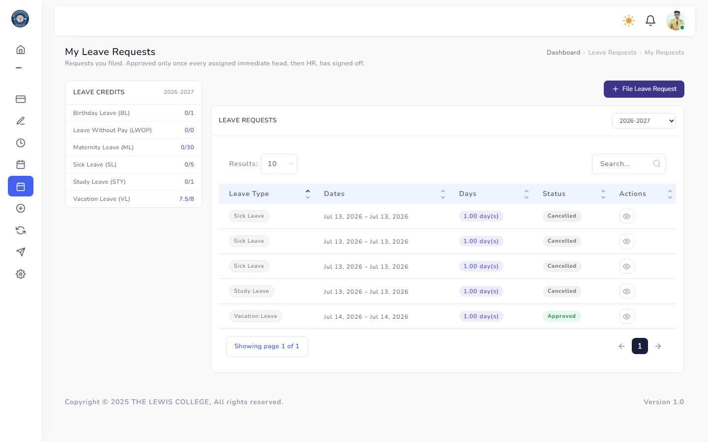
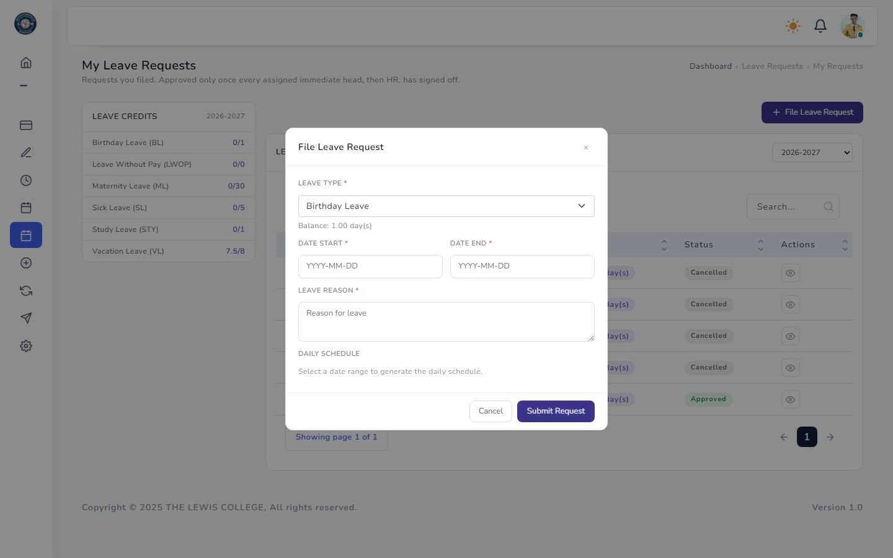
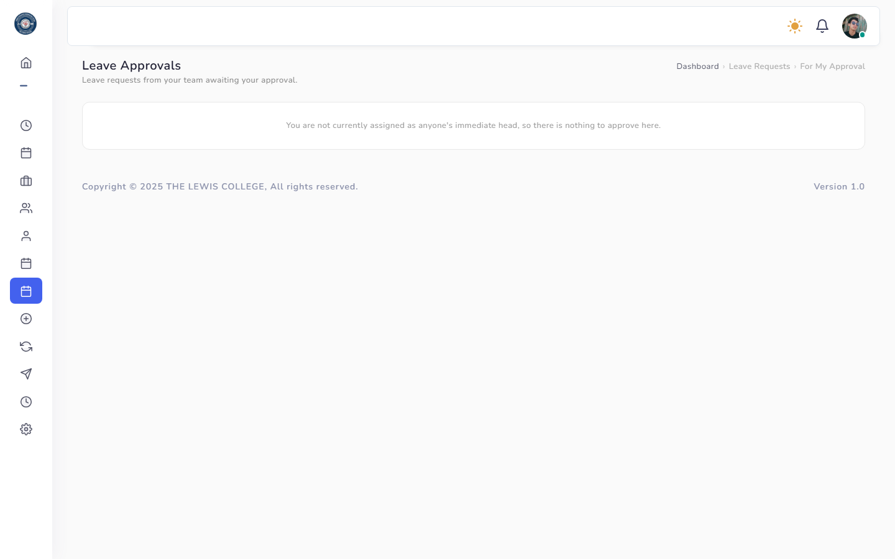
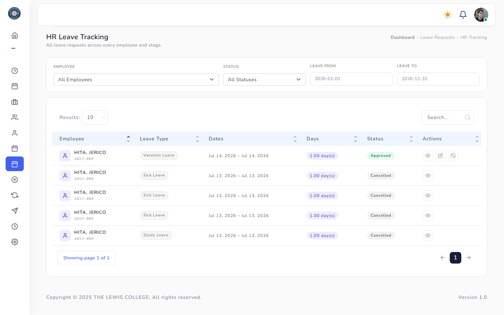

Leave Requests
The end-to-end leave filing and approval workflow: an employee files a request, their immediate head approves or rejects it, then HR reviews and finalizes it.

The signed-in employee's own leave requests and their status.

Choose a leave type and date range; the form expands into a day-by-day schedule so partial-day leave can be specified.

The immediate head's queue of pending requests from their direct reports, with reasons required on rejection.

Company-wide visibility for HR, with the ability to update, void, or override a request after head approval.
Rules & Validation
- Leave type — required.
- Start date / end date — required, valid dates.
- Reason — required.
- Day-by-day schedule — required, at least one day, each with its own date and time range.
- Requests normally follow a two-step approval chain: Immediate Head → HR. Both must approve before a request is finalized as Approved.
- If the employee has no immediate head assigned, the head step is skipped entirely and the request goes straight into HR's queue for approval.
- If HR assigns that employee an immediate head while the request is still awaiting HR (not yet approved), the request is automatically routed back to require that head's approval first before HR can finalize it. Requests HR has already approved are not affected.
- An employee can only cancel a request that is still pending; approved requests can only be voided by HR.
- Available leave credit, gender restriction, and minimum service months (configured under Leave Types) are enforced when filing.
Frequently Asked Questions
Common questions about Leave Requests.
Requests go through a two-step approval chain: Immediate Head first, then HR. It only becomes Approved once both steps are complete.
You can cancel a request yourself only while it is still Pending. Once approved, only HR can void or correct it (see HR Tracking).
Their request skips the head-approval step and goes straight to HR. If HR later assigns them a head while the request is still pending HR review, it will automatically require that head's approval before HR can finalize it.